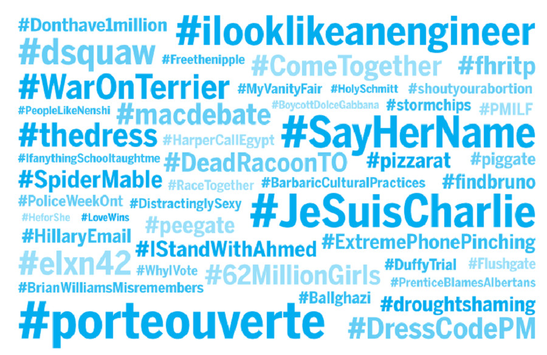

Hashtag activism is a term coined by media outlets which refers to the use of Twitter's hashtags for Internet activism. The term can also be used to refer to the act of showing support for a cause through a like, share, etc. on any social media platform, such as Facebook or Twitter. The point of hashtag activism is arguably to share certain issues with one's friends and followers in the hopes that they will also share the same information. This leads to a widespread discussion and allows for change to occur. However, hashtags have also been used to debate and make people aware of social and political issues. They can be seen as a way to help or start a revolution by increasing the number of supporters from across the world who have not been in contact with the issue. It allows people to discuss and comment around one hashtag. Hashtag activism is a way to expand the usage of communication and make it democratic in a way that everyone has a way to express their opinions.
